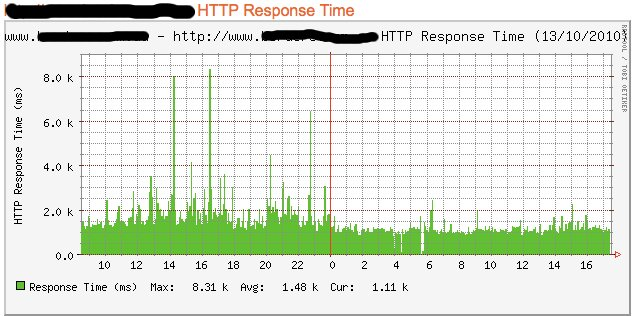

17 Oct 2010
·
nginx web architectures
CDN Optimizations
One of our most trafficked website is on average sustaining 300000 page views per day. Each page has normally a considerable amount of JavaScript, some of it activated only after the whole DOM has been loaded.
Considering that every page has on average 20-30 images coming from our image server, every small optimization to it has an avalanche effect on all the other parts of the system.
I already described the infrastructure in the Nginx post. What i changed from that configuration is all I/O related, trying to minimize writes on the disk and internal connections to Apache, but the biggest change is the duration of nginx cache which is now 6 hours instead of one hour. The impact on the main site has been remarkable.
